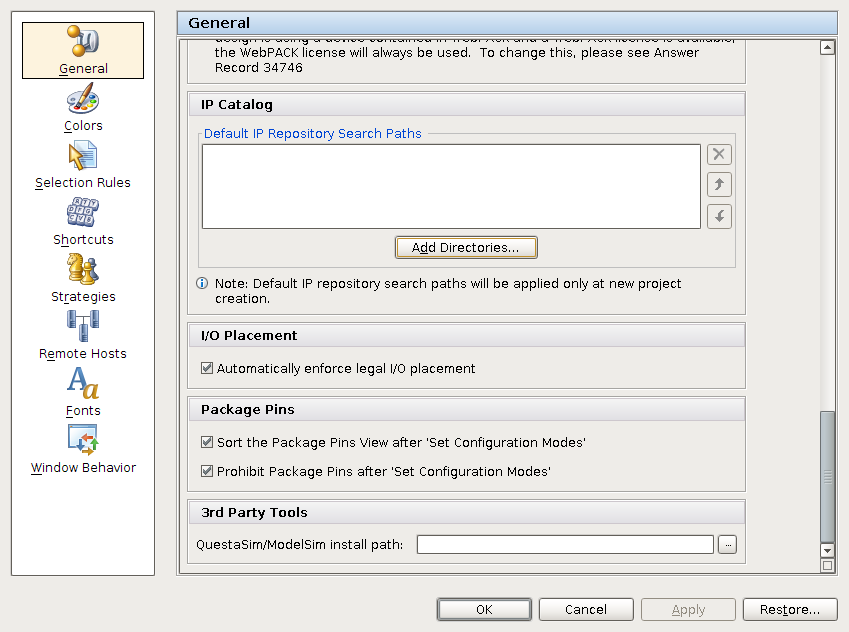
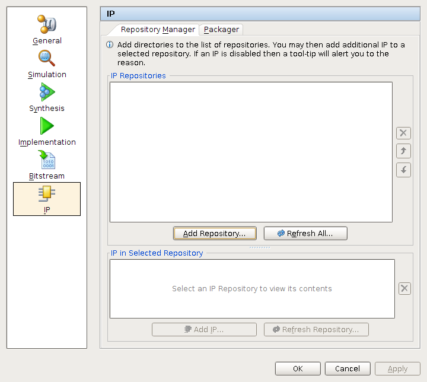
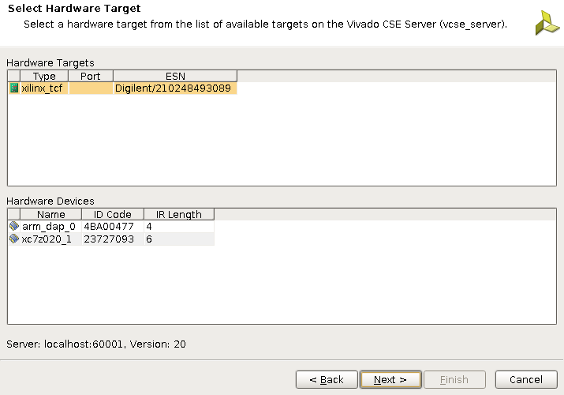
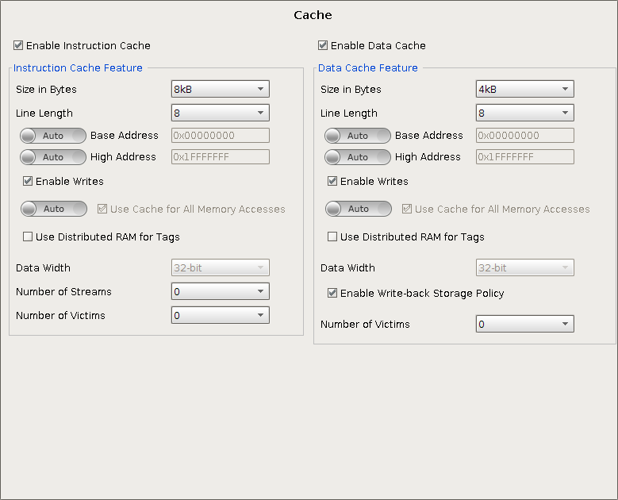
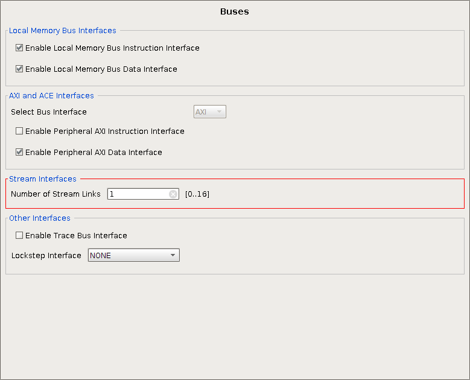
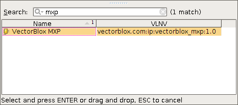
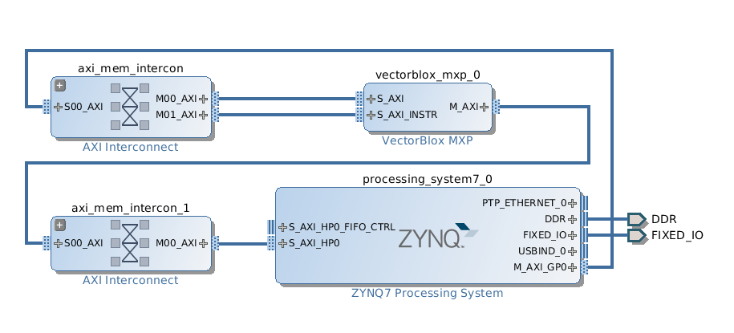
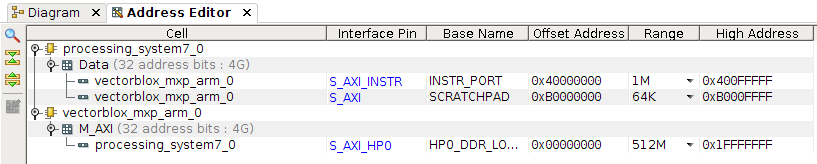
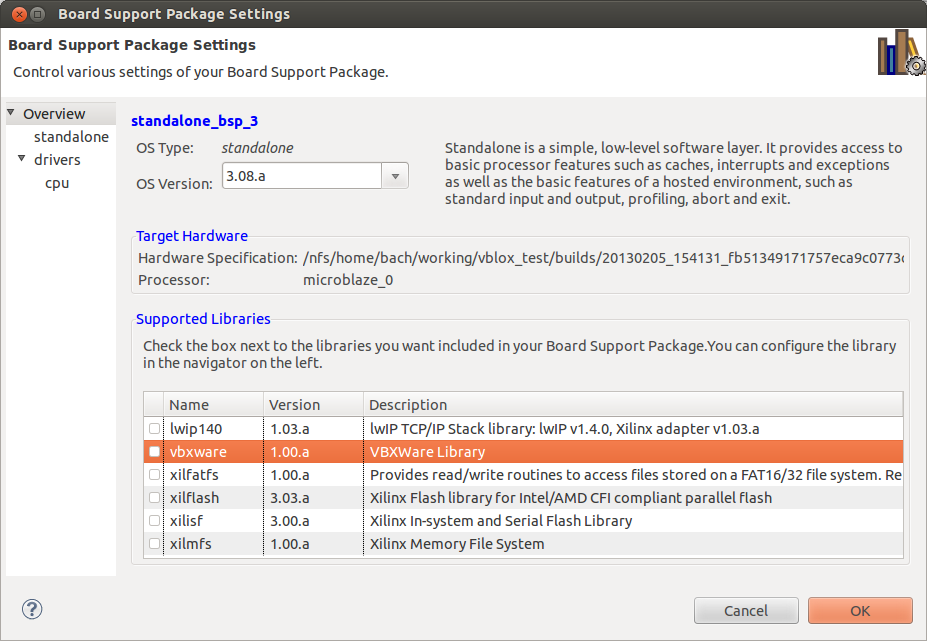
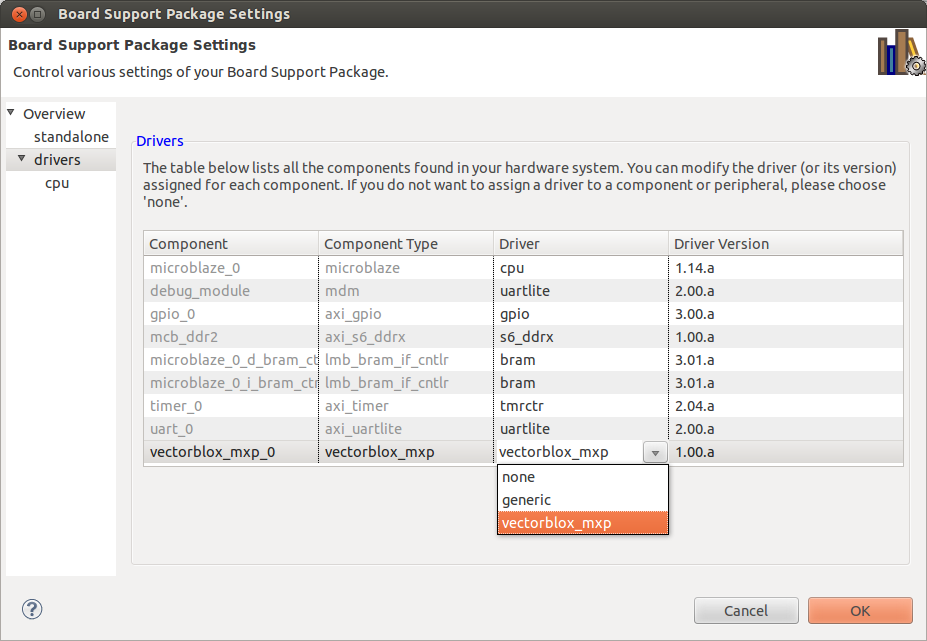

VectorBlox MXP Quickstart for Xilinx Vivado Toolchain
If you do not have a MXP license, or are only intererested in software development, skip over the hardware specific sections.
1 Installation
The VectorBlox MXP is packaged for easy integration with Vivado IP Integrator.
1.1 Prerequisites
Before you begin, make sure you have:
Vivado, version 2013.4 or greater is required. All example projects were created with version 2014.2.
One of the development boards for which we provide pre-built bitstreams, if you wish to follow the examples in this document. Currently pre-built systems are only available for the Avnet ZedBoard.
A VectorBlox MXP release, provided as a zip or tar.gz file. (Hardware developement only)
1.2 Installation
1.2.1 Licensing
If you have a release with encrypted RTL, a FLEXlm license file will be sent to you separately from ip_license_mgt@xilinx.com. It should be installed in the same place you installed your Vivado license.
1.2.2 Vivado Toolchain
Download and install the Vivado Design Suite according to Xilinx’s instructions.
To use the MXP hardware in your Vivado IP Integrator block designs, the
pcoresdirectory inrepository/xilinxmust be added to either Vivado's global IP Repository Search Paths (Tools → Options… → General → IP Catalog → Add Directories…):
or the project-specific IP Repositories (Tools → Project Settings… → IP → Repository Manager tab → Add Repositories…):

The project-specific search paths can also be set from the Tcl Console with
set_property ip_repo_paths $pcores_dir [current_fileset] update_ip_catalogwhere
$pcores_diris the path to thepcoresdirectory.When you run the Xilinx SDK, the
driversandsw_servicesdirectories inrepository/xilinxwill need to be added to the XSDK search path, from the Menu Bar (Xilinx Tools → Repositories → Local Repositories → New…).
If you wish to use the pre-built bitstreams we provide for the Avnet ZedBoard, you should also perform the following steps:
To test your connection to the ZedBoard:
Power on the ZedBoard.
Connect a USB cable between the board’s “PROG” micro-USB port and your computer.
In Vivado, open the Hardware Manager (Flow → Open Hardware Manager). Select Tools → Open New Target… and follow the Wizard's instructions to view the available targets. If all is well, you should see the ZedBoard target appear as in the screenshot below:

Also see the Board Setup Notes below.
1.2.3 Board Setup Notes
- For the ZedBoard, enable JTAG boot mode (as opposed to SD card or Quad-SPI boot mode) by connecting the jumpers for MIO[6:2] to ground.
For the ZedBoard, you might need to install a driver for the Cypress CY7C64225 USB UART. Instructions for installing the Windows driver are available on [zedboard.org] under Support → Documentation → Cypress USB-to-UART Setup Guide, but most versions of Windows should automatically find and install the driver. Popular Linux distributions should already include support for the Cypress USB UART with the USB cdc_acm kernel module (the device should appear as /dev/ttyACM*).
Install a serial port terminal emulation program (e.g. PuTTY on Windows, picocom on Linux) to display output from the board’s USB UART.
2 Hardware
This section describes how to instantiate the VectorBlox MXP processor into a MicroBlaze or Zynq based Vivado IP Integrator design.
Some familiarity with Vivado IP Integrator is assumed; please refer to Xilinx’s documentation for further details. See Vivado Tutorial and User Guide on Embedded Processor Hardware Design (UG940 and UG898).
You must ensure that the VectorBlox MXP design files are in the Vivado IP Search Path; please see the Installation section for details.
2.1 MicroBlaze System Configuration
The figure below shows a Vivado IPI system containing a microblaze system with an MXP.It uses the DRAM connected to the PS7 on the zedboard. The clocks and several peripherals have been removed to simplify the screenshot.
The MXP has three main interfaces: an instruction port that connects to the MicroBlaze's AXI4-Streaming interface, a scratchpad memory interface that connects to the MicroBlaze's peripheral bus, and a DMA engine that connects to the DRAM controller (or other shared memory). The section on MXP port connections below provides further details.
2.1.1 MicroBlaze Configuration
The MXP is little-endian, so the MicroBlaze must be configured to be little-endian as well (
C_ENDIANNESS= 1). (This is the default setting for a MicroBlaze processor with AXI4 interfaces.)We recommend that you enable the MicroBlaze’s Instruction Cache, Data Cache, and Branch Target Cache, as these will significantly improve performance. The figure below shows the MicroBlaze’s cache configuration panel. The cacheable address range is also defined in this panel and typically includes the DRAM address range.

The MXP connects to the MicroBlaze via an AXI4-Streaming interface, so you must set the number of Stream links to at least 1 (
C_USE_FSL_LINKS= 1). In the MicroBlaze advanced core configuration dialog box, select the Buses tab, set Number of Stream Links to 1 or more, and set Select Stream Interfaces to FSL.
Note that MXP software driver assumes that the MXP processor is connected to FSL0 (DRFSL0/DWFSL0). If you need to use FSL0 for another purpose, please contact VectorBlox for a modified version of the MXP driver.
2.1.2 AXI Timer instance
On MicroBlaze-based systems, a dedicated axi_timer instance is required for the vbx_timestamp software functions to work correctly.
2.2 Zynq System Configuration
On a Zynq system, the VectorBlox MXP for ARM uses a dedicated AXI slave interface instead of an FSL interface as an instruction port. The AXI instruction port connects to one of the M_AXI_GPx interfaces on the Zynq Processing System (PS), and appears as a memory-mapped peripheral to the ARM Cortex-A9 cores. The memory range that the instruction port is mapped to must have its attributes set to "shareable device" instead of the default "strongly ordered" to improve instruction throughput.
The MXP's scratchpad slave interface also connects to one of the M_AXI_GPx interfaces.
The MXP's DMA engine is typically connected to one of the Zynq PS High Performance AXI Slave Ports (S_AXI_HPx) for access to the PS DDR DRAM controller, or to a memory controller implemented in the Programable Logic (PL).
If connected to an S_AXI_HPx port, the S_AXI_HPx port should be configured to be as wide as possible, i.e 64-bits wide for vector widths greater than one.
A PL-based memory controller (e.g. Xilinx's 7 Series Memory Interface Generator IP) can be configured with a data bus much wider than 64 bits and can therefore provide much more memory bandwidth to the MXP's DMA engine, but the bandwidth available to the ARM cores in the PS will be more limited because the M_AXI_GPx ports have a fixed 32-bit data bus width.
2.3 AXI Considerations
Avoid using bus masters that perform narrow transfers (i.e. transfers whose size, as specified by AxSIZE[2:0], is smaller than the data bus width).
If a bus master advertises that it uses narrow bursts (e.g. C_M_AXI_SUPPORTS_NARROW_BURST = 1 in its MPD file), IPI will by default automatically enable narrow burst support in all AXI4 slaves connected to that bus master. Narrow burst support does not only increase area, but can also affect performance. The maximum achievable throughput of some memory controllers can be significantly degraded when narrow burst support is enabled.
2.4 Support for Uncached Access to Cached Memory Region
The VBX API library provides some functions to simplify sharing of data between the host CPU (MicroBlaze or ARM Cortex-A9) and the MXP without requiring the application programmer to explicitly flush data cache lines. These functions include vbx_shared_malloc(), vbx_shared_free(), vbx_remap_uncached(), and vbx_remap_cached().
The library assumes that the host CPU can access a cached memory region in an uncached manner (i.e. bypassing the data cache) simply by setting the most significant bit of the physical address to 1.
2.4.1 MicroBlaze Data Cache Bypass
Unfortunately MicroBlaze does not have built-in support for bypassing the data cache (other than disabling the entire data cache), but we can add equivalent functionality by adding some bus connections and placing some restrictions on the system’s address map:
The MicroBlaze’s cached memory region must be contained within the range
0x0to0x7fff_ffff.Any memory peripherals that are to be shared between MicroBlaze and MXP must be accessible in the range
0x0to0x7fff_ffffand at a mirror image location (differing only in the MSB of the address) in the range0x8000_0000to0xffff_ffff.
In terms of bus connectivity, each shared memory peripheral must be reachable from both the MicroBlaze’s M_AXI_DC data cache interface and its M_AXI_DP data peripheral interface. A data access to an address in the cached memory range will go over the M_AXI_DC bus (if there is a cache miss), but by setting the MSB of the address to 1, the access will bypass the cache and use the M_AXI_DP bus.
There are two ways to achieve this additional connectivity:
Add an additional AXI slave port to each shared memory peripheral. Connect one port to the MicroBlaze’s M_AXI_DC interface (and map it to a cached address range), and connect the other port to the M_AXI_DP interface (and map it to an uncached address range that differs from the first port’s address range by just the MSB). Xilinx’s DRAM controllers typically support multiple AXI slave ports.
Connect the M_AXI_DP bus to the M_AXI_DC bus with an AXI-to-AXI connector that also remaps addresses. VectorBlox provides an axi2axi_remap component for this purpose. (It is included in the pcores directory, and can be found in the Vivado IP Catalog called AXI Address Remap) Connect the component’s AXI slave port to the M_AXI_DP bus, and connect its master port to the M_AXI_DC bus. Map the connector’s slave port to an address range above
0x8000_0000, large enough to span the uncached address ranges of all shared memory peripherals. Accesses over the M_AXI_DP bus that fall within the connector’s address range are passed through to the M_AXI_DC bus, but with the MSB of the address set to 0, thus allowing uncached access to memory on the M_AXI_DC bus.The advantage of this method is that it doesn’t require an additional AXI slave port to be added to existing memory peripherals.
2.4.2 ARM Cortex-A9 Data Cache Bypass
On the ARM Cortex-A9, the translation table in the CPU's Memory Management Unit (MMU) can be used to alias the physical address range of a shared memory to two logical address ranges that differ only in address bit 31. The memory attributes of the lower address range are set to "normal cacheable", whereas the attributes of the upper address range are set to "strongly-ordered" to make the region non-cacheable. (Setting the memory attributes of the upper range to "normal non-cacheable" does not seem to have the desired effect.)
The MXP Programming Guide gives an example of how to do this.
2.5 VectorBlox MXP Instantiation and Configuration
2.5.1 Vivado IP Integrator
With an opened block design, add an MXP instance by clicking on the Add IP button, or right-click on the canvas and select Add IP…. In the Search box, type "MXP" to find the MXP IP. If the IP repository search paths have been configured correctly, you should see something similar to the following:

Double-click on VectorBlox MXP (or press Enter) to add an MXP instance to your block design.
Then double-click on the MXP instance top open the "Re-customize IP" dialog box shown below.

The parameters are described in the next section.
2.5.2 Parameters
- Number of Vector Lanes
The number of 32-bit vector lanes. This must be a power of 2.
- Number of Memory Lanes
The data bus width of the MXP DMA Engine’s AXI master interface expressed in terms of 32-bit lanes. The number of memory lanes must be a power of two and no larger than the number of vector lanes.
- Maximum Burst Size in Beats
The maximum number of beats per burst issued by the DMA Engine’s AXI master interface. (A beat is a clock cycle in which data is transferred between a source and sink interface.)
- Scratchpad Size
The Scratchpad RAM size in kilobytes.
- Multiplier Granularity
Sets the minimum multiplier size. This can be used to reduce FPGA multiplier resource utilization at the cost of performance. If set to Byte, then byte, halfword, and word multipliers are instantiated and multiplication of any element size runs at full speed. If set to Halfword, only word and halfword multipliers are instantiated; byte-width multiplication will be executed with the halfword multiplier and run at half speed. If set to Word, only word multipliers are instantiated; halfword-width multiplication will run at half speed and byte-width multiplication will run at quarter speed.
- Fixed-Point Multiply Format
These parameters affect the fixed-point multiply operation. They specify the number of least-significant bits that will be used to represent the fractional part of 32-bit, 16-bit, and 8-bit fixed-point numbers.
The fixed-point formats are also displayed in Q notation, where the first number specifies the number of integer bits and the second number specifies the number of fractional bits.
Fixed-point formats with no integer bits (Q0.X) are not allowed. Multiply high (VMULHI) is equivalent to fixed-point multiply for these formats and should be used instead.
- Instruction Port Type
Sets the type of port for instruction receiving. Choose Memory Mapped AXI4 if connected to an ARM CPU, AXI4-Stream if connecting to MB.
- Number of Mask Partitions
Enable masked instructions
- Maximum Number of Waves fo Masked Instructions.
Sets the maximum vector length for masked instructions. If you need to use vectors that are 4096 bytes long on a V16 choose:
4096/(16*4)= 64(each lane can take 4 bytes)
The core configuration dialog box also displays a couple of derived parameters:
- AXI Master Data Width in Bits
The data bus width, in bits, of the DMA Engine’s AXI master interface. This is derived from the number of memory lanes.
- Maximum Burst Size in Bytes
The AXI master interface’s maximum burst size in bytes, as determined by the memory bus width and the maximum number of beats per burst.
2.6 VectorBlox MXP Port Connections
This section describes the MXP processor’s interfaces:
- core_clk
This is the main MXP clock, as well as the AXI clock. The MXP’s AXI Master and Slave interfaces run synchronously to core_clk.
- core_clk_2x
This clock must be double the frequency of the AXI clock core_clk and must be synchronous to core_clk. It should be generated from the same PLL that provides core_clk.
- aresetn
This is the active low reset input. Assertion and deassertion must be synchronous to the AXI clock core_clk and core_clk_2x.
- AXI3/AXI4 Master
The M_AXI master interface is the MXP DMA Engine’s interface to external memory. The data bus width is determined by the number of memory lanes selected in the MXP Parameter Editor. On the MicroBlaze version of MXP, AXI4 is used, but on the ARM version, AXI3 is used to facilitate connection to the Zynq PS' AXI3-only S_AXI_HPx slave ports without having an AXI4-to-AXI3 procotol converter (burst splitter) automatically inferred. The only difference between the AXI3 and AXI4 interfaces is the maximum burst length supported: 16 beats for AXI3 and 256 beats for AXI4.
- AXI4-Lite Slave
The S_AXI slave interface allows the MicroBlaze or ARM CPU to access the MXP’s scratchpad memory. It is typically connected to either the MicroBlaze’s M_AXI_DP bus or Zynq PS's M_AXI_GP1 port. The slave data bus is 32-bits wide.
- AXI4-Streaming(MicroBlaze version only)
The MicroBlaze provides instructions to the MXP over an AXI4-Streaming interface. The MXP’s S_AXIS_INSTR and M_AXI_INSTR interfaces must be connected to the MicroBlaze’s M0_AXIS and S0_AXIS interfaces, respectively.
- AXI4 Instruction Slave (ARM version only)
The S_AXI_INSTR slave interface is used to receive instructions from the Zynq PS. It should be connected to the Zynq PS's M_AXI_GP0 interface.
- core_clk_2x
This must be connected to a clock that is synchronous to and twice the frequency of core_clk.
The figures below show a Vivado IP Integrator block design for a a Zynq-based MXP system, followed by the Address Map view of the same system.
 
2.7 Vivado Implementation Flow
When your IP Integrator block design is complete, select Tools → Validate Design to run DRC.
If there are no errors, create a top-level HDL wrapper by right-clicking on the block design in the Sources panel and selecting Create HDL Wrapper….
Then, from the Flow Navigator, run Generate Block Design, then Generate Bitstream. Synthesis and Implementation will be automatically run prior to bitstream generation.
3 Software
This section describes how to download one of the provided pre-built FPGA bitstreams to a supported development board and how to compile and run a test program on it.
Below, the string EXAMPLES refers to the examples subdirectory of the extracted release.
3.1 Prerequisites
Before you begin, make sure you have:
Installed Xilinx Vivado 2013.4 or later.
A ZedBoard development board/kit to use prebuilt systems.
Connected your development board to your computer via USB cable and turned the board on.
Configured your development board so that FPGA bitstreams and software ELF files can be downloaded via JTAG. For example, on the ZedBoard, the jumpers for MIO[6:2] should all be tied low.
3.2 Compiling and Running a Test Program
Start a Command Shell.
If using Windows, open a Command Prompt (e.g. go to the Start Menu, then type
cmd.exein the "Search program and files" box), change to the Vivado installation directory (e.g.C:\Xilinx\Vivado\2014.2), then run eithersettings32.batorsettings64.batdepending on whether you are using a 32-bit or 64-bit version of Windows.In Linux, open a terminal and run the appropriate
settings{32,64}.{sh,csh}script in the root of your Xilinx Vivado installation. (Select 32 or 64 depending on whether you want to use the 32-bit or 64-bit versions of the tools, and select sh or csh depending on whether you are using a Bourne-style shell, such as sh or bash, or a C Shell, such as csh or tcsh.) This sets up the proper environment variables for using the Xilinx development tools.Navigate to one of the prebuilt VectorBlox MXP systems for your development board, located in
EXAMPLES/boards/<board_name>/prebuilt_*.For example, for the ZedBoard, change directory to
EXAMPLES/boards/zedboard_arm_viv/prebuilt_zedboard_arm_viv/v16for a 16-lane MXP system.Store the path to the directory in a shell variable. In Linux, assuming you are using a Bourne-style shell such as
shorbash, usePROJ_ROOT=`pwd`If using
cshortcsh, useset PROJ_ROOT=`pwd`In Windows, use
set PROJ_ROOT=%cd%Navigate to a test application such as
vbw_vec_add_t, located inEXAMPLES/software/bmark/vbw_vec_add_t.Make the executable.
To compile the program for the FPGA bitstream you previously selected, you need to pass the location of the BSP to
make. Assuming thePROJ_ROOTshell variable has been set appropriately, on Linux, runmake clean_all all PROJ_ROOT=$PROJ_ROOTOn Windows, run
make clean_all all PROJ_ROOT=%PROJ_ROOT%After a long list of messages and a few seconds, the file test.elf should have been created.
Note that we used the
clean_alltarget first to ensure that any libraries that might have been compiled against a different BSP in the past were cleaned and re-compiled. If you know that the libraries were already compiled for the selected BSP, you can omit theclean_alltarget.Program the FPGA.
We provide a make target to program the FPGA with XMD. In Linux, use
make pgm PROJ_ROOT=$PROJ_ROOTIn Windows, use
make pgm PROJ_ROOT=%PROJ_ROOT%
Open a serial port terminal emulator to prepare to view the output from the board’s USB-UART. On Linux, you can, for example, open a new terminal and run
picocom -b 115200 /dev/ttyACM0. On Windows, use a program such as PuTTY to connect to the USB serial port.Download the executable.
We provide a make target to download the ELF with XMD. In Linux, use
make run PROJ_ROOT=$PROJ_ROOTIn Windows, use
make run PROJ_ROOT=%PROJ_ROOT%
- View execution output. You should see output in the serial terminal emulator you opened in an earlier step. The executable may use stdin or stdout for printf, scanf, and similar functions.
3.3 Using the MXP with Linux (Beta)
Currently it is only possible to run on ARM on the ZYNQ chips, but it should possible with a little effort to make it work under microblaze as well.
3.3.1 Building and Booting linux
Use the instructions at http://www.wiki.xilinx.com/Getting+Started with the following caveats
Use git://github.com/VectorBlox/linux-xlnx.git instead of git://github.com/Xilinx/linux-xlnx.git (checkout the mxp branch)
When generating the device-tree, make sure that the vectorblox drivers (located in repository/xilinx/drivers ) are in the repository in addition to the device tree generator downloaded from xilinx.
3.3.1.1 Non-volatile Root Filesystem
To use another partition as a rootfs rather than using a ramfs, follow these instructions.
Create A SD card with a small boot partition (FAT32) and a large root partition (EXT4)
Create a rootfs
We suggest using the rootfs from linaro (link) but any rootfs should work.
Move that rootfs into the correct partition on the SD card. If you are using the suggested rootfs, use the following command:
sudo tar --strip-components=3 -C /media/rootfs -xzpf linaro-precise-ubuntu-desktop-20121124-560.tar.gz binary/boot/filesystem.dirEditing the Device-Tree
Edit the device tree by adding
root=/dev/mmcblk0p2 rw rootfstype=ext4 rootwait devtmpfs.mount=0to bootargs.During u-boot, press any key to stop autoboot, then run the following commands from the u-boot prompt
> load mmc 0 ${kernel_load_address} ${kernel_image} > load mmc 0 ${devicetree_load_address} ${devicetree_image} > bootm ${kernel_load_address} - ${devicetree_load_address}note: the ${variable} are pre-initialized by u-boot
Those commands can be automated by editing include/configs/zynq-common.h in the u-boot repository. Search for
sdboot=to find where to edit.
3.3.2 Using the VectorBlox API from Linux Hosted Processes
To use the MXP from processes hosted by Linux, it is necessary to use the VectorBlox API (libvbxapi.a). The Vectorblox API is released in source form in vectorblox/repository/lib/vbxapi. To cross-compile the library, run make LINUX=true. Another option is to compile the source onto the newly created linux system and use it's native gcc to compile it there. To compile there, use the command make LINUX=true Native=true
4 Creating your own Standalone BSP
4.1 From the GUI
If using Vivado, make sure the Block Design is open, then select File → Export → Export Hardware. By default the XML platform description file will be created in
<proj_name>/<proj_name>.sdk/, but this can be changed by setting the "Export to:" location in the dialog box. When this is done, Launch the SDK from File → Launch SDKIn the Xilinx SDK, select the Xilinx Tools menu, then Repositories.
The Preferences dialog box will open, with the Repositories page already selected.
You must now add the location of the
driversandsw_servicesdirectories (i.e. their common parent directory) to the software repository list. Click New… next to either Local Repositories or Global Repositories, and add the repository location. Click OK to close the Preferences dialog box.From the File menu, select New → Board Support Package.
Give your BSP a project name, and under Board Support Package OS, select standalone. Click Finish.
In the Board Support Package Settings dialog box, click on Overview in the left panel, and look at the Supported Libraries section. You should see an entry for vbxware, the VBXWare Library, as in the figure below.
If you do not see the VBXWare library listed, the likely reason is that the VectorBlox sw_services directory is not in the SDK repository search path.
You can check the box next to vbxware if you wish to include the VBXWare library in your BSP. However, do not check this box if you wish to compile and run the VectorBlox-supplied test programs because the Makefiles for these programs compile the VBXWare library separately from the BSP.
In the same dialog box, click on drivers in the left panel. Check that the vectorblox_mxp driver is assigned to the vectorblox_mxp component. See below.
If the vectorblox_mxp driver is not available as an option, the likely reason is that the VectorBlox drivers directory is not in the SDK repository search path.
Click OK to close the BSP Settings dialog box and compile the standalone BSP library
libxil.a.
5 Compiling the Test Programs with a different Standalone BSP
To compile the programs in TOPDIR/software/bmark with a different standalone BSP, there are some additional steps you must take:
Open the file
TOPDIR/software/common/xil_vars.mkfor editing.Change the
PROJ_ROOTvariable to point to the root of your project directory.Change the
BSP_ROOT_DIRvariable to point to the root of BSP directory. Ensure thatBSP_INC_DIRandBSP_LIB_DIRpoint to the correctincludeandlibsubdirectories.Change the
LD_SCRIPTvariable to point to the linker script you wish to use. In your linker script, use a stack size of 8 MB and a heap size of 64 MB if you want to be able to run all of the test programs.
Create a file called bsp_vars.mk in
$(BSP_ROOT_DIR)that defines the variablesCPU_FLAGS,PROCESSOR_TYPE, andPROCESSOR_INSTANCE.CPU_FLAGScontains the compiler flags specific to the CPU configuration for your system. For example, on a MicroBlaze-based system, this might look like:CPU_FLAGS := -mlittle-endian -mxl-barrel-shift \\ -mxl-pattern-compare -mcpu=v8.50.c -mno-xl-soft-mulOn an ARM-based system this would typically be empty, i.e.
CPU_FLAGS :=PROCESSOR_TYPEshould be set to eithermicroblazeorcortexa9; it determines which compiler and linker to use.PROCESSOR_INSTANCEshould be the name of the CPU instance, usuallymicroblaze_0orps7_cortexa9_0. It is used to construct theBSP_INC_DIRandBSP_LIB_DIRvariables (the paths to the BSPincludeandlibsubdirectories).